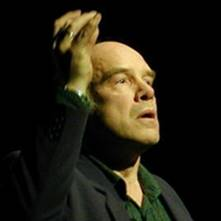

Institute for Computer Music and Sound Technology / (ICST) Zurich University of the Arts
#02 ascolta Akusmatische Hörstunde

Konzert
Dienstag, 4. Oktober 2022, 18.00 Uhr
- Toni-Areal,
- ICST-Kompositionsstudio (3.D02, Ebene 3)
- Pfingstweidstrasse 96,
- 8005 Zürich
Eintritt frei
Programm
Vêpres vénitiennes – Il dì s’appressa (1999) Rainstick (1993) Im Eismeer – ein Schumann-Stück für Tonband (1997) Auf schwanker Halme Bogen (1985) Un Madrigal gentile (2004)

Gerald Bennett, geboren 1942 in New Jersey (USA), studierte unter anderem an der Harvard University bei Robert Moevs und in Basel bei Klaus Huber und Pierre Boulez. 1967–76 war er Dozent für Musiktheorie am Basler Konservatorium, ab 1969 dessen Leiter. 1976–1981 stand er dem Département Diagonal am Pariser Institut de Recherche et Coordination Acoustique/Musique (IRCAM) vor, und ab 1993 war er Mitglied der Internationalen Akademie für elektroakustische Musik Bourges. Von 1981 bis zu seiner Pensionierung lehrte Gerald Bennett Musiktheorie und Komposition an der Hochschule für Musik Zürich. Gemeinsam mit Bruno Spoerri, Antonio Greco und Rainer Boesch gründete er 1985 das Schweizerische Zentrum für Computermusik(SZCM) und gemeinsam mit Daniel Fueter 2005 das ICST – Institute for Computer Music and Sound Technology.
Das Werk von Gerald Bennett umfasst Orchester-, Kammer- Vokalwerke in verschiedenen Besetzungen mit und ohne Elektronik sowie zahlreiche elektroakustische Stücke. Seine Kompositionen werden bei Edition Modern/Ricordi und Mnémosyne verlegt, Tonträger mit seinen Werken erschienen bei Wergo, Jecklin und Harmonia Mundi. Er ist Verfasser zahlreicher Publikationen, die bei Gallimard, Oxford University Press, Eulenburg, MIT Press u.a. erschienen sind. Gerald Bennett
Aktuelle Informationen zu der Veranstaltung finden Sie hier.
Programmtexte:
Gerald Bennett: Vê pres vé nitiennes - Il dì s’appressa (1999)
“Il dì s’appressa” is part of a larger work (of course still unfinished): the “Venetian Vespers”. The Venetian Vespers at San Marco were distinguished from the Roman Vespers by the richness of their music. This work takes the place of the ancient marian sung towards the end of the vespers. It is based on the first two lines of the last poem of Petrarch’s “Canzoniere”, a poem about death addressed to the Virgin: Il dì s’appresa e non puot’ esser lunge, Sì corr’ il temp e vola … “Il dì s’appressa” was commissioned by the International Institute of Electroa- coustic Music in Bourges, France, and realized in its studios in 1999.
Gerald Bennett: Rainstick (1993)
The rainstick is a ritual instrument of the Indians of Central and South America used to conjure rain. In this piece, the rainstick is used to conjure many different things, both real and imaginary (but not rain). One of the piece’s principal ideas is the pas- sage from continuity to discontinuity. Of course, this movement can reflect and ex- press both a structural and an emotional trajectory. “Rainstick” was commissioned by the Groupe de Musique Expérimentale de Bourges and was realized in their studios in 1993.
Im Eismeer – ein Schumann-Stück für Tonband (1997)
Auf schwanker Halme Bogen (1985)
Gerald BENNETT : Un Madrigal gentile (for tape alone)
“Un Madrigal gentile” is meant to be a piece of Commedia dell’ arte. It was inspired by the madrigal comedy “Amfiparnaso” by Orazio Vecchi (1594) and begins where the «Amfiparnaso»’s narrator announces the Doctor’s singing of a parody of the most famous madrigal of the 16th century, “Achor che col partire” by Cipriano da Rore. My piece, too, is a parody of the same madrigal, which can be heard again and again all the length of the piece. Cipriano’s madrigal engenders many musical figures in my piece; each one is treated as a character from an imaginary Commedia dell’arte, exaggerated, made clownlike, clumsy or gratuitously brutal. The sentimental lovers or the madrigal accompany the piece from their impossible world, and frequently cheerful chaos reigns. «Un Madrigal gentile» was commissioned by the French Ministry of Culture, realized at the IMEB in 2004/2005 and is dedicated to Françoise Barrière and Christian Clozier in grateful friendship.
The following texts will be heard:
Canta il Dottore un madrigal gentile sotto’l balcon de la sua cara sposa con voce soavissima e amorosa.
The doctor sings a gracious madrigal under the balcony of his dear betrothed in the sweetest loving voice.
(Enfants au Grand Guignol) Attention! Attention! (Children watching Punch and Judy) Be careful! Be careful!
. . . tanto son dolci . . . . . . how sweet are . . .
In the prologue of the «Amfiparnaso», the narrator tells us:
E la città dove si rappresenta quest’opra è’l gran Teatro del mondo, perch’ognun desìa d’urdirla. Ma voi sappiat’intanto che questo di cui parlo spettacolo si mira con la mente, dov’entra per l’orrecchie, e non per gl’occhi. Però silenzio fatte, e’n vece di vedere hora ascoltate.
And the City where this piece plays is the great Theater of the World, which everyone wishes to hear. But nevertheless you should know that the drama of which I speak is seen only in the mind, into which it enters through the ears and not the eyes. Silence, then, and rather than watching, now listen.
©2025 ICST